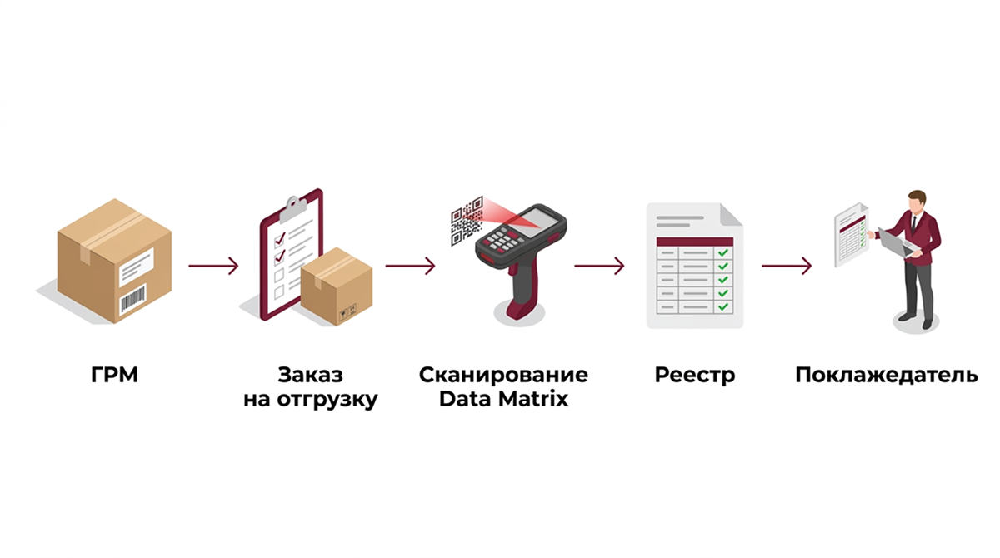

ГРМ — идентификатор грузового места. Data Matrix — код отдельной маркированной единицы. На складе эти коды работают на разных уровнях: ГРМ сопровождает коробку или паллету от приемки до выдачи, а Data Matrix сканируется только на выходе груза со склада — если к заявке на отгрузку подключено сканирование кодов Data Matrix при отгрузке
Такое разделение позволяет принимать груз без вскрытия упаковки и при этом получать перечень кодов именно тогда, когда он нужен — перед передачей товара покупателю или перевозчику. На этом принципе построено ответственное хранение грузов для бизнеса в «АМБАР»
Что такое грузовое место
Грузовое место — это отдельная единица груза, которую склад принимает, хранит и выдает целиком: коробка, паллета, мешок или другая упаковка. Внутри одного грузового места может лежать один предмет или много единиц товара
Склад работает с грузовым местом как с целым. Его замеряют, фотографируют и размещают на хранение, не разбирая содержимое по наименованиям и артикулам
Что фиксирует ГРМ
Каждому грузовому месту при приемке присваивается собственный номер — ГРМ. Вместе с ним склад фиксирует:
- объем грузового места — по результатам замера;
- фотографию внешнего вида принятого места
Номер ГРМ и фотография отображаются в личном кабинете. По ним поклажедатель узнает свой груз и выбирает, какие места выдать, доставить получателю или направить на другой склад. ГРМ используется на всех этапах: при приемке, хранении, поиске и выдаче груза
Поклажедатель — организация, индивидуальный предприниматель или физическое лицо, передающие товар на склад для хранения и складской обработки
Что идентифицирует Data Matrix
Data Matrix — код отдельной маркированной единицы товара в системе маркировки «Честный ЗНАК». Код наносится на сам товар или его упаковку, поэтому в одной коробке могут оказаться десятки и сотни кодов
Терминал сбора данных считывает Data Matrix как символьную последовательность. Статус кода и сведения о товаре хранятся в государственной системе маркировки ГИС МТ, и проверяются они через саму систему, а не по изображению на этикетке
| Элемент | Что идентифицирует | Когда используется |
|---|---|---|
| ГРМ | Коробку, паллету, мешок или другое грузовое место | При приемке, хранении, поиске и выдаче груза |
| Фотография ГРМ | Внешний вид принятого грузового места | Для идентификации груза поклажедателем в личном кабинете |
| Data Matrix | Отдельную маркированную единицу товара | При дополнительном сканировании в процессе отгрузки |
| Заказ на отгрузку | Конкретную операцию выдачи или доставки | Для объединения выбранных ГРМ и считанных кодов |
| Реестр кодов | Перечень кодов, считанных в рамках заказа | Для передачи поклажедателю после обработки |
Почему при обычной приемке «АМБАР» не сканирует содержимое закрытого короба
Чтобы считать Data Matrix, нужен доступ к каждой маркированной единице. Для закрытого груза это означает вскрыть короб, достать товар, отсканировать коды и заново упаковать место. Такая обработка меняет упаковку поклажедателя и требует его отдельного согласия
Поэтому на склад АМБАР груз принимается по грузовым местам. При обычной приемке склад не вскрывает упаковку и не определяет содержащиеся внутри наименования или артикулы. Каждому месту присваивается ГРМ, выполняются замер и фотофиксация
При приемке коды Data Matrix не сканируются, и поэкземплярный учет кодов на всем сроке хранения не ведется. Data Matrix сканируется отдельно — только при заказе услуги на выходе со склада
Когда требуется дополнительное сканирование на выходе
Сканирование подключается к конкретной заявке на выдачу или отгрузку груза. Обычно оно нужно, если:
- поклажедателю требуется перечень кодов Data Matrix, фактически вошедших в конкретную отгрузку;
- реестр нужен бухгалтерии или оператору ЭДО для дальнейшего оформления документов;
- в одной заявке несколько ГРМ, и коды нужно связать с выбранными грузовыми местами;
- важно исключить ручное переписывание кодов;
- нужно зафиксировать отсутствующие, поврежденные или нечитаемые этикетки
Как коды связываются с ГРМ и заказом
Связь между двумя уровнями учета появляется в момент отгрузки. Процесс выглядит так:
- Поклажедатель выбирает в личном кабинете нужные ГРМ и создает заявку на выдачу или доставку
- В заявке указывается необходимость сканирования кодов «Честный ЗНАК», требуемый формат реестра и особые требования к обработке
- Сотрудник склада находит выбранные ГРМ и перемещает их в зону обработки заказа
- Если Data Matrix находится внутри короба или под транспортной упаковкой, доступ к коду обеспечивается только по согласованному заданию поклажедателя
- Сотрудник считывает доступные коды терминалом сбора данных. Каждый считанный код фиксируется в составе конкретного заказа
- Система формирует перечень фактически отсканированных кодов с привязкой к заказу и ГРМ

Код всегда привязывается к заказу на отгрузку. Связь с конкретным ГРМ устанавливается, если коды сканируются последовательно по отдельным грузовым местам и такое требование указано в заявке. Если один и тот же код считан повторно, повтор фиксируется и не добавляется как новая единица
Что получает поклажедатель
Результат обработки — реестр фактически отсканированных кодов в формате XLSX. В нем:
- коды Data Matrix, считанные при обработке заказа;
- номер заявки или заказа на отгрузку;
- номера ГРМ, из которых считаны коды, — если процесс обработки позволяет установить такую связь;
- отдельно отмеченные успешно считанные, повторные и нечитаемые коды
Реестр передается поклажедателю для дальнейшей работы в его учетной системе, ЭДО или ГИС МТ. Подробнее о подготовке заявки и составе файла — в материале как получить реестр кодов Data Matrix при отгрузке
Реестр содержит результаты складского сканирования и сам по себе не изменяет статус кодов в ГИС МТ. Передача сведений в «Честный ЗНАК», формирование УПД и работа через ЭДО остаются на стороне поклажедателя, если иное не предусмотрено отдельным соглашением
Частые вопросы
Является ли ГРМ кодом «Честного ЗНАКа»?
Нет. ГРМ — внутренний идентификатор грузового места на складе «АМБАР». Он не относится к системе маркировки и не заменяет коды Data Matrix на товаре
Сканирует ли «АМБАР» коды при приемке груза?
Нет. При обычной приемке склад учитывает грузовые места по номерам ГРМ, выполняет замер и фотофиксацию. Data Matrix сканируется только на выходе, если услуга добавлена к заявке на отгрузку
Сколько кодов Data Matrix может быть в одном ГРМ?
Столько, сколько маркированных единиц находится в грузовом месте. При приемке склад их не пересчитывает: перечень кодов появляется только после сканирования на выходе
Можно ли связать каждый код с конкретным ГРМ?
Да, если коды сканируются последовательно по отдельным грузовым местам и такое требование указано в заявке
Можно ли отсканировать код короба или паллеты вместо каждой единицы?
Это возможно только при наличии корректного агрегированного кода и заранее согласованного процесса. Стандартный сценарий предусматривает сканирование доступных Data Matrix отдельных единиц
Можно ли проверить, находится ли код в обороте?
Стандартная услуга не включает онлайн-проверку статуса кода в ГИС МТ. Склад фиксирует символьную последовательность, считанную с этикетки
Получите реестр кодов по своей отгрузке
Если груз уже хранится в «АМБАР», подключите сканирование кодов к заявке на выдачу — менеджер рассчитает стоимость и согласует порядок обработки. Если груз пока не на складе, разместите его на ответственное хранение: каждому месту присвоят ГРМ и сделают фото в личном кабинете